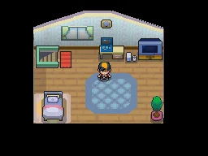
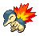
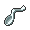

攻略大全 / 心金 / 魂银（详细图文） / 地图总览
介绍、若叶镇、29号道路
主线
开场
一小段动画之后，在标题画面按 A 键或 START。游戏会先给出三个选项：「操作说明」「冒险说明」和「不需要说明」。
「操作说明」会告诉你：点触摸屏可以确认选项、推进对话。根据情况，下屏会显示带 A 键图标的不同操作；如果对话框里出现双屏图标，说明触摸屏上有可以点的按钮。之后会列出各个按键和它们的作用。
| 按键 | 效果 |
|---|---|
| 十字键 | 移动角色；在菜单中移动光标 |
| A 键 | 和人对话、调查周围；选择菜单选项 |
| B 键 | 取消选择；退出菜单 |
| X 键 | 在菜单之间切换 |
| Y 键 | 使用登记的重要物品 |
| START | 打开主菜单 |
「冒险说明」介绍玩家这场「伟大冒险」的背景。游戏建议你和遇到的每个人说话、到处调查，这样才能收集到克服难关、解开谜团、找到前进方向所需的信息。战胜其他训练家和野生宝可梦的挑战会让你变强，但这不是游戏唯一的目标；更重要的是，希望你能遇到无数的人，并通过他们获得成长。
选「不需要说明」的话，著名的宝可梦研究者大木博士会出场，向新训练家介绍宝可梦的世界。接着要选择角色的性别，并输入角色的名字（最多七个字）。完成后，你就被送进宝可梦的世界，开始冒险了！
↓ 下一站：若叶镇
若叶镇
 ← 29号道路→ 27号道路（需要冲浪）
← 29号道路→ 27号道路（需要冲浪）
旅程从城都地区东南部的若叶镇开始。这是个只有四栋建筑的安静小镇。东北边的房子是你和妈妈的家，东南边那栋是你的朋友琴音/响的家。北边的大建筑是空木研究所，这位城都地区的研究者和家人住在二楼。小镇西边通往29号道路的草丛，东边的水面则连着27号道路。
| 宝可梦 | 版本 | 方式 | 等级 | 出现率 |
|---|---|---|---|---|
| 最初的伙伴 | ||||
| 菊草叶 | 心金 / 魂银 | 赠送 | Lv.5 | 1 只 |
 火球鼠 | 心金 / 魂银 | 赠送 | Lv.5 | 1 只 |
| 心金 / 魂银 | 赠送 | Lv.5 | 1 只 | |
| 道具 | 版本 | 位置 / 获得方法 |
|---|---|---|
| 心金 / 魂银 | 空木研究所，选完最初的伙伴后由空木博士的助手给予（×5） 劲敌（西尔弗）站过的位置（隐藏道具） | |
| 宝可装置 | 心金 / 魂银 | 家里，选完最初的伙伴后由妈妈给予 |
| 之后再来 | ||
| 心金 / 魂银 | 空木研究所，给空木博士看过神奇蛋孵出的波克比后，由博士给予 | |
| 心金 / 魂银 | 空木研究所，集齐城都地区 8 枚徽章后由空木博士给予 | |
| 心金 / 魂银 | 空木研究所，进入名人堂后由空木博士给予 | |
自己家
2F
旅程从你的卧室开始。电脑可以打开邮箱，查看收到的邮件。里面已经有一封，是你的朋友琴音/响写的，说自己有多喜欢宝可梦。
1F
妈妈坐在桌边，你下楼时她会走过来。她说琴音/响刚刚来过，在和自己的玛力露玩捉迷藏。她突然想起空木博士在找你，有事要拜托你，并提醒你研究所就在隔壁。然后她把包包和训练家卡片交给你，让你准备出门。
触摸屏上现在会出现「包包」「训练家卡片」「记录」和「设置」按钮。
要出门，走到南墙边的地垫上，按十字键的下。
熟悉的面孔
你一走出家门，一只玛力露就兴奋地跑过来，把你错认成了它的训练家。片刻之后，琴音/响从研究所二楼出来，带着玛力露回家了。
偷看的人
一个红头发的少年正从侧窗往空木研究所里偷看。如果你去跟他说话，他会把你推开，然后继续盯着窗户。
空木研究所
空木博士已经在等你了。他介绍了一下自己的研究：在精灵球发明之前，宝可梦是跟在训练家身边一起走的，就像琴音/响和玛力露那样。他说，把宝可梦装在精灵球里虽然方便，但让它们跟着人走一定也有好处，可能会影响它们的成长或进化。博士宣布要送你一只宝可梦，并请你让它在精灵球外跟着你旅行，帮他验证这项研究。他指向一台放着三个精灵球的大机器，让你从中挑选。
你还没来得及选，博士就发现自己收到了一封邮件。他有个外号叫「宝可梦爷爷」的熟人，把研究宝可梦当成爱好，经常把自己的发现告诉博士。博士说这些发现通常没有说得那么惊人，猜这次又是一颗宝可梦蛋。他和助手们都忙于研究，所以请你代他去一趟。为了让你路上有伴，他让你从他的珍贵宝可梦中挑一只。三只各有优劣，选你最喜欢的就好。
| 草 | 火 | 水 | |||
| 草 | 火 | 水 | |||
| 草 | 火 | 水 | |||
- 菊草叶（叶子宝可梦）是草属性的御三家。16 级进化成月桂叶，32 级进化成大竺葵。它很早就能学会飞叶快刀和魔法叶，还有毒粉、光合作用（回复 HP）和反射壁（提高队伍的防御）。不过这么有意思的招式组合代价也很高：它打游戏里的大部分道馆都会很吃力，尤其是前两个。和另外两只相比，菊草叶大概是最有挑战性的一只；但这不代表它是坏选择，如果你喜欢靠策略取胜，它会很棒。
- 火球鼠（火鼠宝可梦）是火属性的御三家。14 级进化成火岩鼠，36 级进化成火暴兽。火属性在大部分道馆都占优势，但这个好属性也有代价：招式不算好。基本上在 35 级学会喷烟之前，它都得靠一般的招式。打完第三个道馆后可以用招式学习器学大字爆炎，但 PP 少、命中也一般。如果你不选火球鼠，要到第三个道馆之后很久才能拿到火属性宝可梦，那时会有卡蒂狗或六尾。
- 小锯鳄（大颚宝可梦）是水属性的御三家。18 级进化成蓝鳄，30 级进化成大力鳄。它是三只里招式最多样的，很早就能学会咬住和冰冻牙来补足打击面。一大优势是能学冲浪，这大概是游戏里最有价值的秘传招式。和另外两只相比，如果你想轻松通关，小锯鳄大概是最好的选择。
选好最初的伙伴后，可以给它取个昵称，最多十个字。小宝可梦从精灵球里跳出来，博士告诉你，随时可以用他身后的机器给宝可梦回复。他说宝可梦爷爷住在若叶镇西边、离吉花市不远的地方。
你离开研究所时，博士的助手会给你 5 个伤药。
和琴音/响会合
你带着新宝可梦走出研究所时，琴音/响和玛力露正在等你。对方很兴奋地想看你选的宝可梦，并建议你给妈妈看看。
自己家
和妈妈说话，她会夸你的新宝可梦。听说了博士交代的任务后，她告诉你宝可装置已经从维修店拿回来了，并交给你。
触摸屏上现在会出现「宝可装置」按钮。
她接着介绍：宝可装置是每个训练家都该有的便利工具，选电话图标、再点登记过的联系人就能打电话。里面已经有一个联系人，就是妈妈的电话。
还有一件事
你走近29号道路时，空木博士会从研究所追出来。他之前忘了，现在把他的电话号码登记进你的宝可装置。
↓ 下一站：29号道路
29号道路
29号道路是一条从若叶镇往西通往吉花市的丘陵小路。往西走必须穿过几片草丛；往东走则可以跳下一连串台阶，避开草丛和里面的野生宝可梦。北边的46号道路从山上延伸下来。
| 宝可梦 | 版本 | 方式 | 等级 | 出现率 |
|---|---|---|---|---|
| 心金 / 魂银 | 草丛 | Lv.2-4 | 早 55% · 日 55% · 夜 0% | |
| 心金 / 魂银 | 草丛 | Lv.4 | 早 5% · 日 5% · 夜 0% | |
| 心金 / 魂银 | 草丛 | Lv.2, 4 | 早 0% · 日 0% · 夜 15% | |
| 心金 / 魂银 | 草丛 | Lv.2-3 | 早 40% · 日 40% · 夜 0% | |
| 心金 / 魂银 | 草丛 | Lv.2-4 | 早 0% · 日 0% · 夜 85% |
| 道具 | 版本 | 位置 / 获得方法 |
|---|---|---|
| 心金 / 魂银 | 东北边那片草丛的东边 | |
| 之后再来 | ||
| 心金 / 魂银 | 琴音/响示范怎么捕捉宝可梦之后给予 | |
| 心金 / 魂银 | 西北边的小山上，从球果树上摘（每天一次，需要球果盒） | |
 弯曲的汤匙 | 心金 / 魂银 | 南侧，星期二找 Tuscany，拿到天空徽章之后 |
| 震惊缎带 | 心金 / 魂银 | 南侧，星期二找 Tuscany，见过所有「星期兄妹」之后 |
一天一颗球果
西北小山上那棵是球果树。球果是一种果实，可以加工成精灵球，也可以榨成果汁来提升宝可梦的运动能力。球果共有七种，这棵树结的是绿球果。每棵树一天结一颗。不过现在还没有装球果的容器，所以摘不了。
↓ 下一页：吉花市、30号道路、宝可梦爷爷的家、空木研究所
原文：Bulbapedia《Walkthrough:Pokémon HeartGold and SoulSilver/Part 1》（修订版本 4617638，），作者见原文页面历史。本页由 Eli 的杂货间翻译为中文，并有改动（重新排版、精简部分图注）。原文与译文均以 CC BY-NC-SA 2.5 授权。配图来自原站，版权归原作者与游戏厂商；地图截图来自 Bulbagarden Archives，游戏画面版权归 Nintendo / Game Freak / The Pokémon Company。